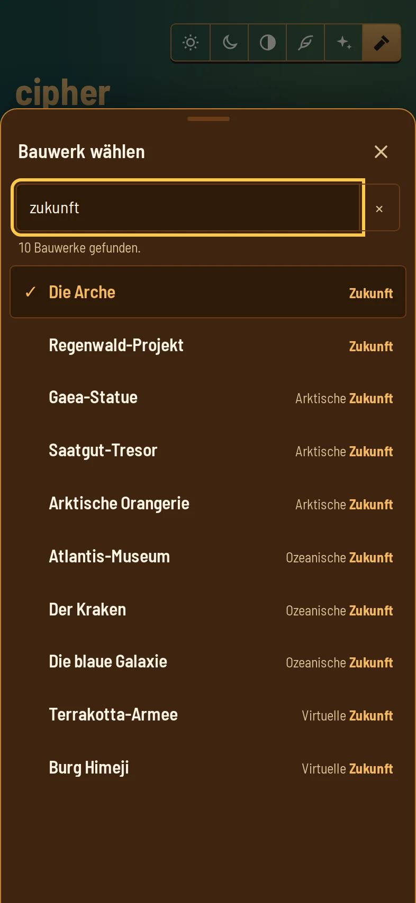

Bauwerk
Finden, statt zu scrollen
Ein Tipp auf das Bauwerk öffnet eine eigene Auswahl: am Telefon als Blatt von unten, am großen Bildschirm als Fenster in der Mitte. Die 49 Bauwerke stehen nach Zeitalter geordnet, das gewählte ist markiert.
- Suche nach Name, Kürzel oder Zeitalter — „obsi“ findet das Observatorium, „zukunft“ alle zehn aus den Zukunfts-Zeitaltern.
- Schließt wie ein System-Blatt: Zurück-Geste, Esc, Kreuz, Tipp daneben oder nach unten ziehen.
- Vollständig per Tastatur bedienbar: Pfeile, Bild auf/ab, Pos1/Ende, Enter. Wer lostippt, sucht.
- Eine Schnellsuche direkt unter dem Feld, für alle, die lieber gleich tippen.